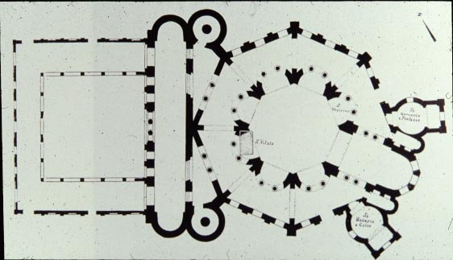
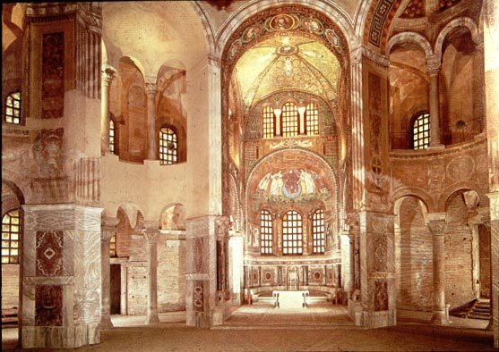
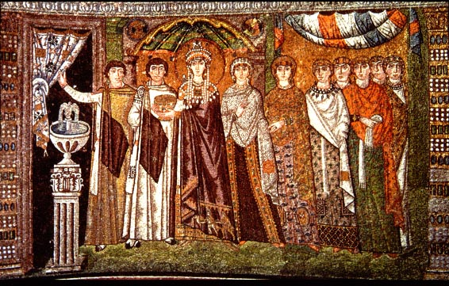

San Vitale
When the Byzantine empire (another term for the eastern Roman empire
centered at Constantinople) reconquered Italy in the 530's-550's,
during
the reign of the emperor Justinian, they made Ravenna the capital of
the
territory of Italy. Although much of Italy was lost to the empire
after 568, Ravenna remained the capital of the Byzantine territory in
Italy
until 751.
The Byzantines used art and architecture, among other means, to
emphasize
their authority in Ravenna. One of the first churches they built,
started even before the reconquest (c. 527-565), was dedicated to St.
Vitalis.
It was octagonal in shape, reflecting the most current architectural
trends
in Constantinople. It also contained pictures of Justinian and
his
empress Theodora, flanking the high altar.

Ground plan of San Vitale, showing the octagonal form of the main
part
of the church, and the rectangular fore-court leading to the main
doors.

Exterior view from the north.

Interior view looking toward the main altar. The original mosaic
decoration
survives only in the area right around the altar.

The emperor Justinian (in the purple robe) and his court. The
man to the right of Justinian, in the gold robe, is Archbishop Maximian
of Ravenna, who dedicated the church.

Facing the picture of Justinian was one of the empress Theodora and
her court.